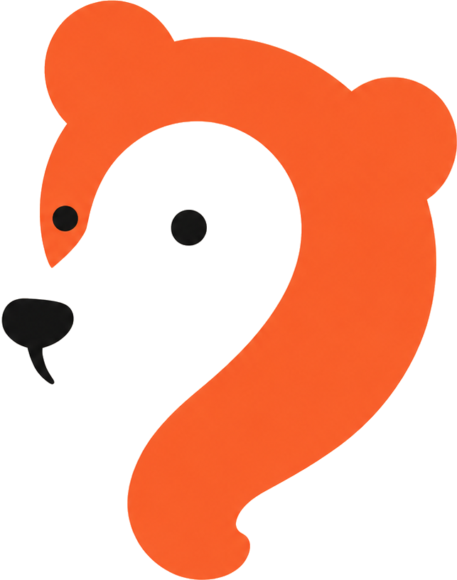
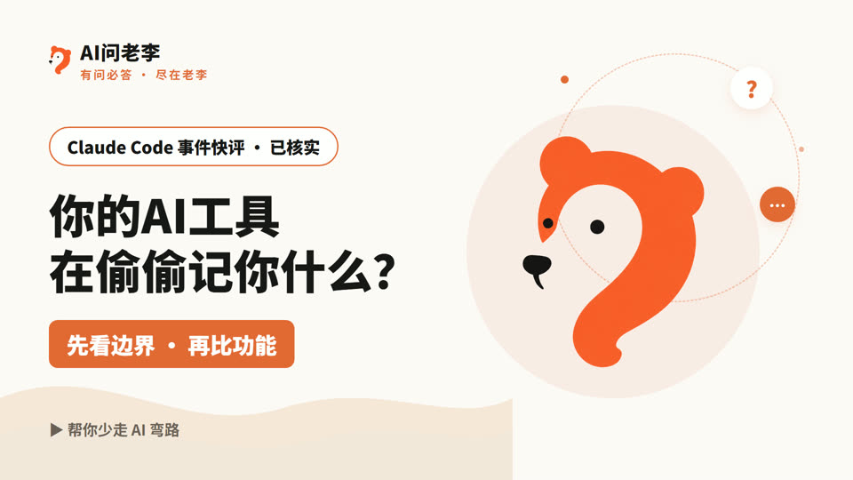
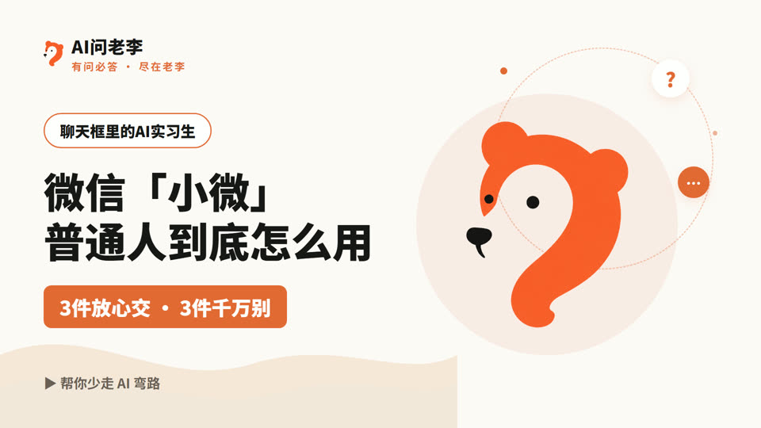
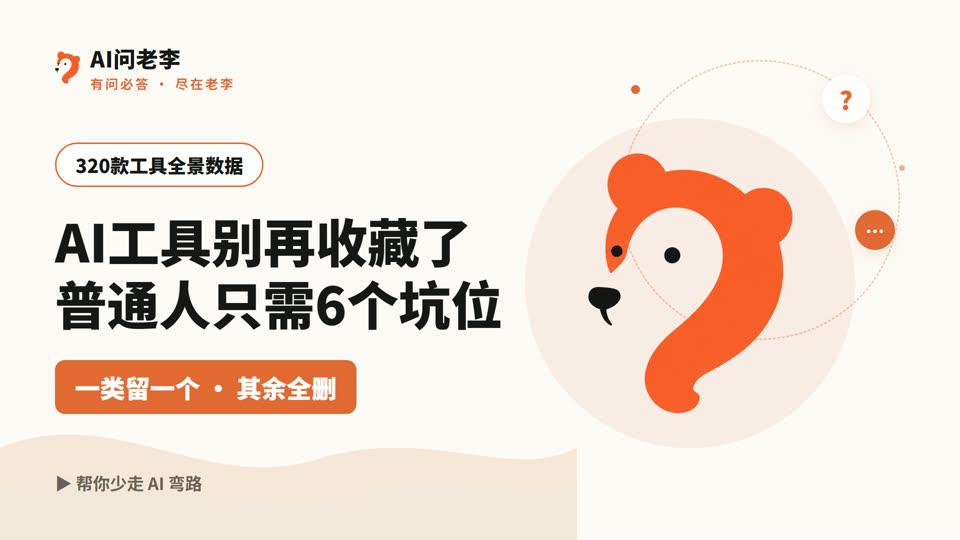
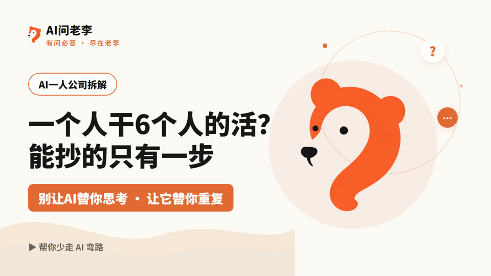
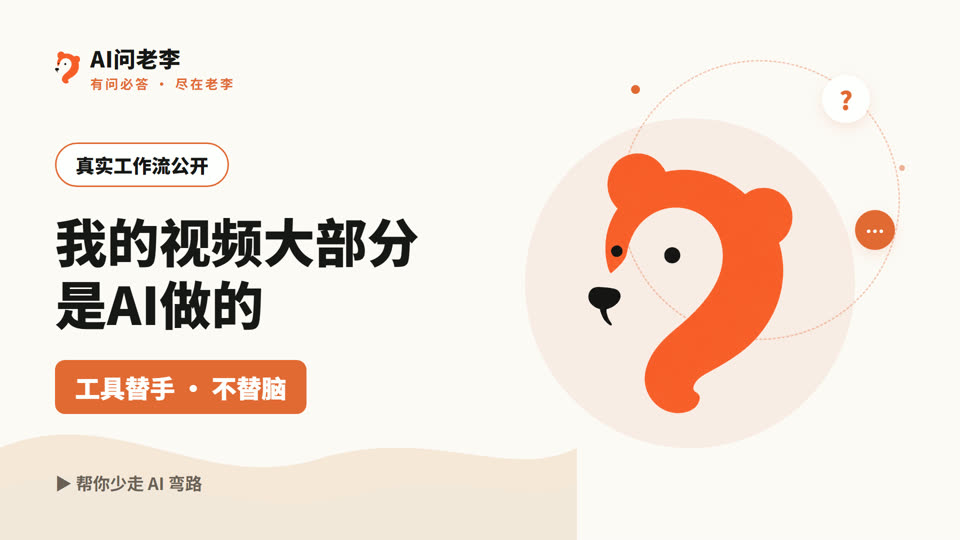

不比参数,不搬热点,不装专家。每个选题一个锋利判断——讲工具,也讲它在真实工作里的结果。
双支柱:AI 用进工作(搞钱/提效) × 具身智能与硬件(产品经理一线)
只问一句:它能不能接上你的文件和习惯。
把「一次做对的过程」存下来,教给 AI。
反噱头。能抄的那一步在哪,成本是什么。
不收藏 300 条,吃透能复用的 3 条。
硬件产品经理视角,看得见供应链的那种。
每条都过事实核查,来源可溯;口播全部真人声。

Claude Code 事件快评·包体比对一手核实——选工具第一课不是比功能,是看边界。

它是你聊天框里的实习生:能核对的活交给它,不能核对的活自己来。

最挤的赛道恰恰可以整个跳过——工具是坑位,不是收藏夹。

不是让 AI 替你思考,是让它替你重复。能抄的只有一步。

但这不叫偷懒,叫分工——工具替手,不替脑。
判断表是这里的固定交付物:不给功能罗列,给「你的场景该用什么」。先收藏,用时对照。
| 坑位 | 干什么 | 怎么选 |
|---|---|---|
| ✍️ 写东西 / 问答 | 写稿、回邮件、问问题 | 免费档任选一个当主力,用到上限再换 |
| 🔍 查资料 | 带来源的搜索 | 全市场才 11 款,选头部 |
| 🎨 做图 / 海报 | 配图、封面 | 会画的选专业档,不会画的选模板档 |
| 📊 办公文档 | 文档、表格、PPT | 先试你现有软件自带的 AI |
| 🎬 剪视频 / 配音 | 短视频、音频 | 用到再开,别提前付订阅 |
| 🤖 替你跑重复活 | 周报、汇总、流程 | 先把重复活写成步骤,再交给 Agent |
李文杰,消费电子产品经理。
白天管平板项目和供应链,晚上用 AI 做内容——选题雷达、事实核查、剪辑字幕都交给 AI,但选题判断和口播声音,永远自己留着。
这里不只讲 AI 工具是什么,更讲它适合什么场景、怎么进你的流程、最后能不能真做出结果。数字和日期都有来源;不确定的,会直接告诉你不确定。
工具替手,不替脑。帮你少走 AI 弯路。